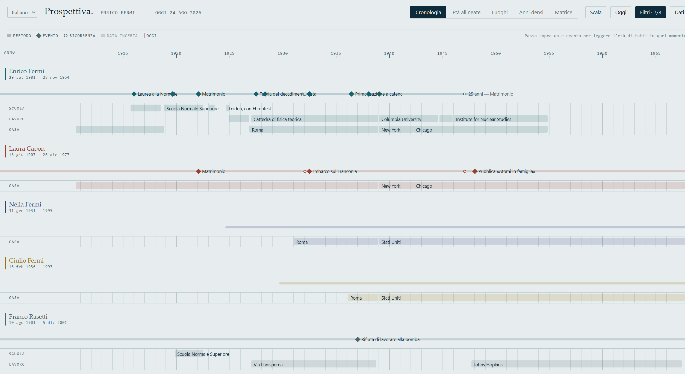
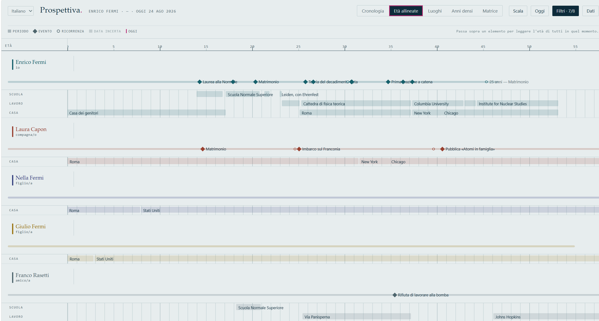
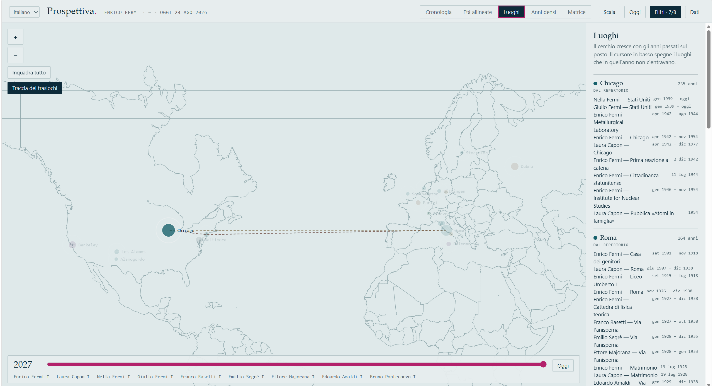
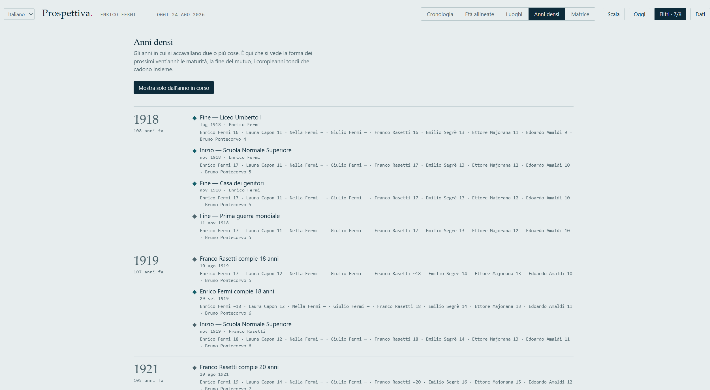
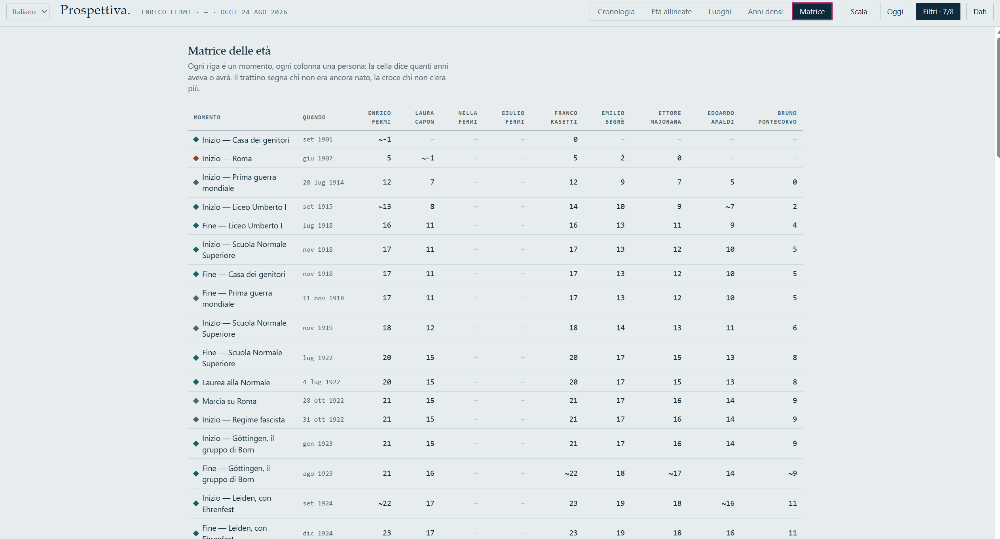

Vite, scuole, lavori, case, vacanze, scadenze e luoghi, tutti sullo stesso asse. Serve a rispondere a domande che un calendario non sa affrontare.
Quanti anni avrò alla maturità di mia figlia? Cosa faceva mio nonno alla mia età? Quale sarà l'anno in cui tutto capita insieme?
L'applicazione è un unico file HTML. Nessun account, nessun server, nessuna tile da scaricare: doppio clic e funziona, anche in aereo o in barca senza campo. I dati restano sul dispositivo — l'unico modo per farli uscire è il pulsante che li scarica.

Passi sopra un qualsiasi elemento e leggi l'età di tutti in quel momento. È la ragione per cui esiste.
Da una data di nascita escono i cicli scolastici e la maturità; da una scadenza, la catena dei rinnovi. Non si inseriscono a mano.
Di un bisnonno spesso si sa solo l'anno. Si scrive 1921, e
le età che ne derivano vengono mostrate come approssimate.
Lo stesso insieme di dati, cinque letture. Ognuna risponde a una domanda diversa.




Un file JSON che si incolla nell'applicazione. Nessun modulo da compilare, nessun campo obbligatorio oltre al nome e alla data di nascita.
{
"people": [
{ "id": "anna", "name": "Anna", "birth": "2012-09-03",
"school": { "through": "bachelor" },
"documents": [
{ "label": "Carta d'identità", "type": "identita", "expires": "2027-09-03" }
]
}
],
"events": [
{ "label": "Matrimonio", "date": "2007-06-16",
"who": ["marta", "davide"], "recurrences": [10, 25] }
]
}Da queste poche righe l'applicazione ricava la maturità di Anna nel 2031, i rinnovi della carta d'identità fino all'orizzonte, gli anniversari, i compleanni tondi di tutti, e l'età di ciascuno in ognuno di quei momenti.
Vale la pena saperlo prima di provarlo, non dopo.
Il salvataggio nel browser è comodità: si perde svuotando i dati del browser o cambiando dispositivo. Il file che scarichi è la copia buona.
I cicli scolastici generati sono quelli della scuola italiana di oggi, e le validità dei documenti quelle dello Stato italiano. L'interfaccia si può leggere in inglese; le regole restano quelle. Per un percorso diverso — un vecchio ordinamento, una scuola straniera — i periodi si inseriscono a mano, che è poi quello che si fa per i nonni.
Non ci sono legami di parentela né discendenze: ci sono persone su un asse del tempo. Se cerchi un genealogico, questo non lo è.
Non c'è modo di mandare la propria carta a qualcun altro dall'interno dell'applicazione. Si scambia il file JSON.